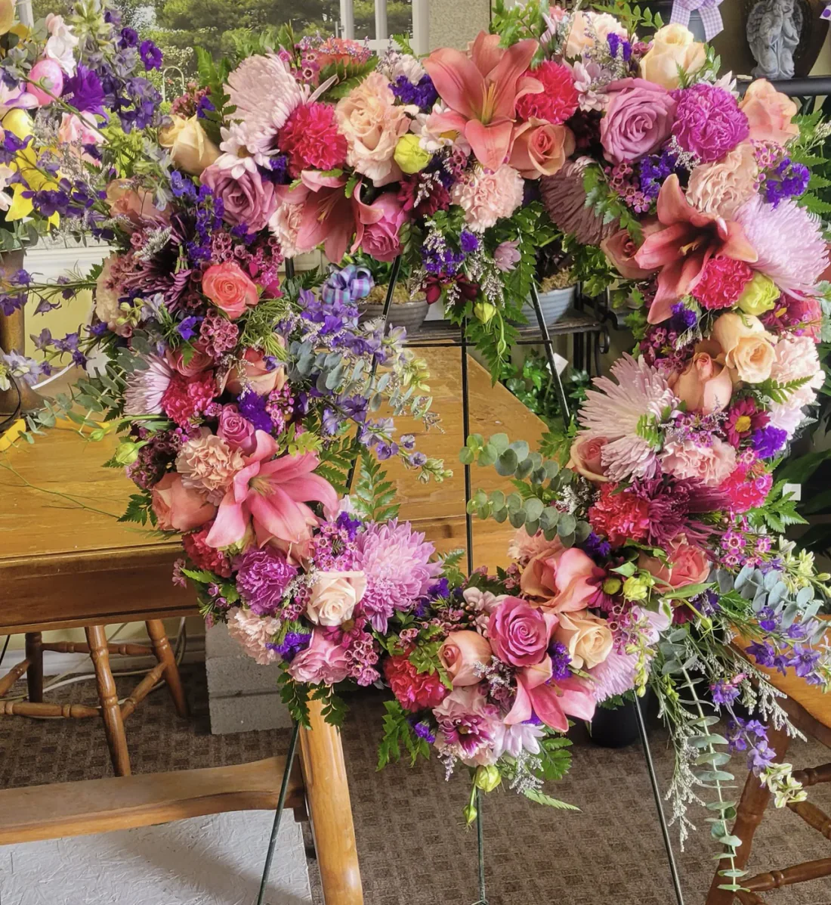
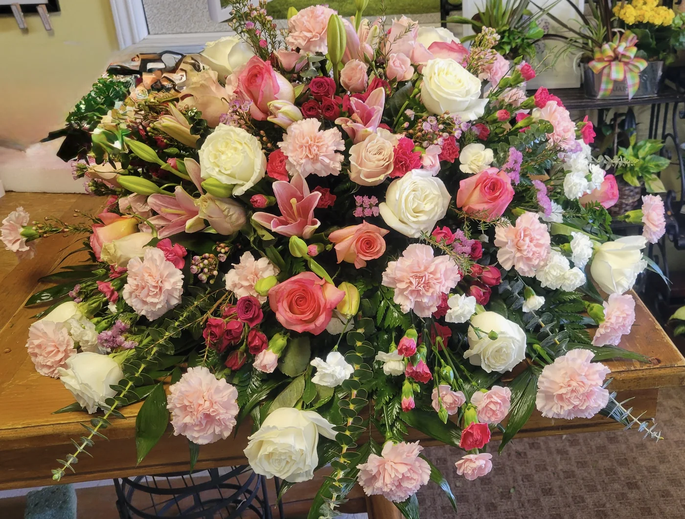
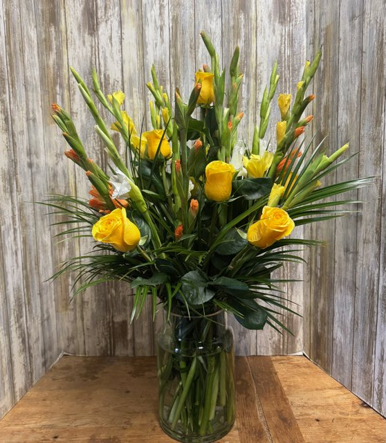
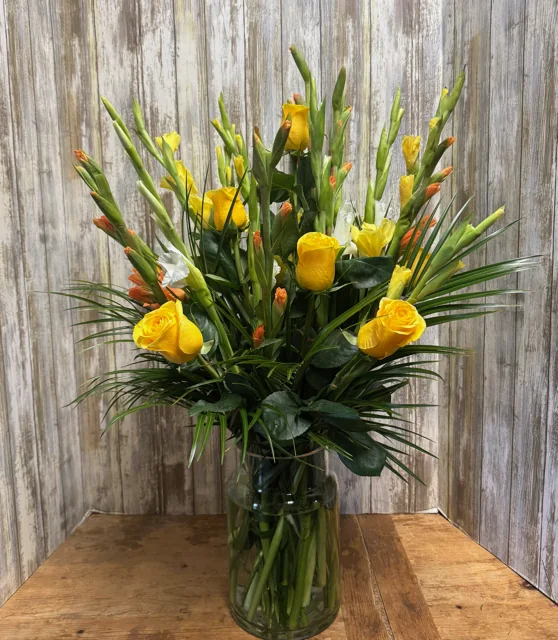

Sympathy & remembrance
Your hometown florist · Canton, Texas
Thoughtful flowers for celebrations, comfort, remembrance, and the ordinary days when someone needs to know you care.
Designed by hand. Confirmed by a real person.

“You bring the reason. We'll help with the flowers.”
Kind words from customers
“The ladies at Flowers Etc. are so talented!”
“They were absolutely gorgeous!”
“They were perfect! I would definitely use them in the future!”
Begin with the moment
Start with the reason you're sending them. We can help with color, size, substitutions, and delivery details.

From the workroom
Browse real work from our Canton shop, then use it as a starting point. Our team will confirm availability and substitutions.


Fresh from the workroom
See recent arrangements, seasonal updates, and the flowers leaving the shop. Facebook messages are welcome, too.
A real person when you need one
For sympathy, funeral, memorial, and cemetery pieces, we can help you choose something appropriate and handle the delivery details carefully.
Call (903) 567-7045 ↗The story behind the shop
Lisa spent years helping at Flowers Etc. before becoming its owner. She grew into the shop through the daily work—learning, arranging, helping families, and understanding how much the smallest details matter.
Read Lisa's storyContact the shop
1200 S Trade Days Blvd, Ste 150
Canton, TX 75103
Monday–Friday, 8 AM–5 PM
Saturday, 8 AM–12 PM